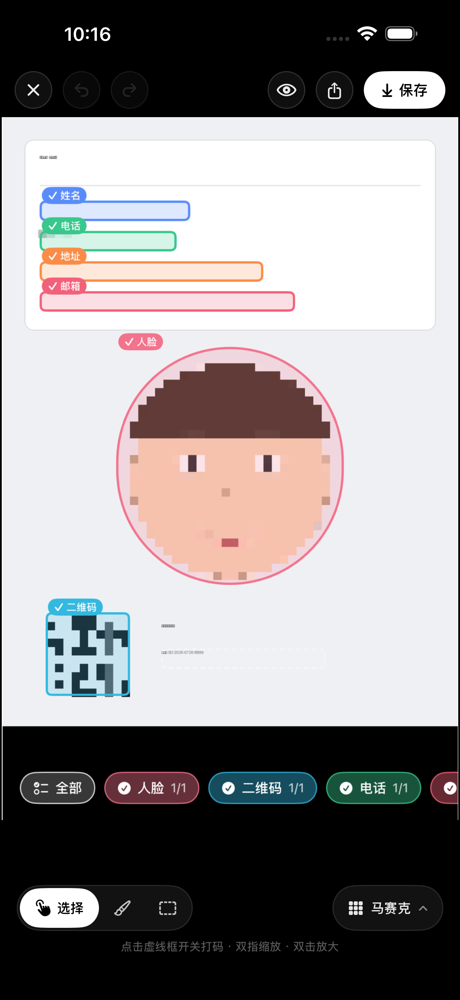

自动发现敏感内容
结合人脸检测与本机 OCR，识别人脸、电话、地址、邮箱、证件号和条码。
 Blurly
Blurly
隐私打码 · 完全本机处理
自动识别人脸、姓名、电话、地址和证件信息。无需账号，不上传照片，也不追踪你。

结合人脸检测与本机 OCR，识别人脸、电话、地址、邮箱、证件号和条码。
点选开关识别区域，也可以使用自由画笔与矩形框补上任何遗漏。
马赛克、模糊与色块清理，支持调整强度和人脸保护范围。
Privacy by design
Blurly 没有服务器、账号或分析 SDK。识别和渲染全部由设备上的 Apple Vision 与 Core Image 完成。
阅读完整隐私政策 →